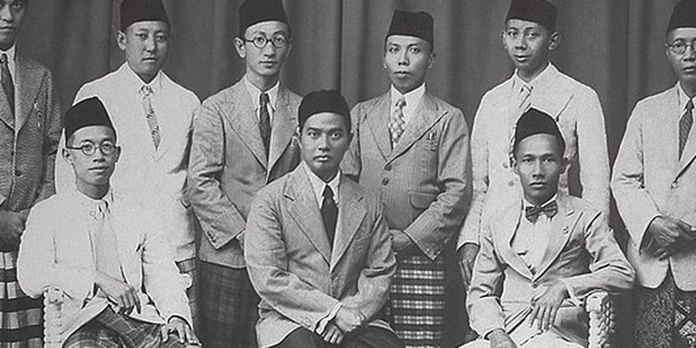

Organisasi Muhammadiyah
Organisasi yang lahir pada periode moderat/kooperatif adalah Muhammadiyah. Keberadaan organisasi Budi Utomo telah memberikan inspirasi kepada K.H. Ahmad Dahlan untuk mendirikan sebuah organisasi yang bersifat modern. Ia pun mendirikan organisasi Muhammadiyah pada 18 November 1912 yang bercirikan organisasi sosial, pendidikan, dan keagamaan. Salah satu tujuan didirikannya Muhammadiyah adalah untuk memurnikan ajaran Islam, yaitu seharusnya Islam bersumber pada Alquran dan Al-Hadis, tindakannya adalah amar makruf nahimunkar, atau mengajak hal yang baik dan mencegah hal yang buruk. Pembaruan model Wahabiyah di Arab pun dimulai, antara lain dengan manajemen organisasi modern, pendirian lembaga pendidikan, dan dakwah melalui media atau surat kabar. Sistem pendidikan dibangun dengan cara sendiri, menggabungkan cara tradisional dengan cara modern. Model sekolah Barat ditambah pelajaran agama yang dilakukan di dalam kelas. Dalam bidang kemasyarakatan, organisasi ini mendirikan rumah sakit, poliklinik, dan rumah yatim piatu yang dikelola oleh lembaga-lembaga. Usaha di bidang sosial itu ditandai dengan berdirinya Pertolongan Kesengsaraan Umum (PKU) pada tanggal 15 Februari 1923. Itulah bentuk kepedulian sosial dan tolong-menolong sesama muslim.
Gambar Tokoh-Tokoh Organisasi Muhammadiyah
Pada 19 Mei 1917, Ahmad Dahlan membentuk seksi perempuan dengan nama ‘Aisyiyah menurut nama seoarang istri nabi, yang kelak akan memainkan peran penting dalam modernisasi kehiduoan perempuan Indonesia (Ricklefs, 2005). Selanjutnya, organisasi wanita juga dibentuk dengan nama ‘Aisyiyah di Yogyakarta sebagai bagian dari organisasi wanita Muhammadiyah. Nama tersebut terinspirasi dari nama ‘Aisyah, istri Nabi Muhammad yang dikenal taat beragama, cerdas, dan rajin bekerja untuk mendukung ekonomi rumah tangga. Diharapkan profil ‘Aisyah juga menjadi profil warga ‘Aisyiyah. Aisyiyah yang masih eksis sampai sekarang didirikan sebagai pembantu peran kaum perempuan, terutama bidang keagamaan. Ketika ‘Aisyiyah berdiri, perempuan tidak mendapatkan akses pendidikan dan kemasyarakatan karena dianggap tidak perlu mengenyam pendidikan, apalagi mempunyai peran kemasyarakatan.Aisyiyah berpendapat bahwa perempuan dan laki-laki sama sama mempunyai kewajiban untuk mengajak kepada kebaikan dan mencegah kemungkaran, termasuk melalui bidang pendidikan.
Developed by ahmakbar.dev © 2023
Petunjuk Penggunaan Website
- Setelah berada di halaman utama, pilih Menu Capaian Pembelajaran untuk mengetahui capaian pembelajaran yang di gunakan serta tujuan pembelajaran.
- Setelah melakukan proses kegiatan membaca capaian pembelajaran, serta tujuan pembelajaran di Menu Capaian Pembelajaran. Silahkan pengguna mengakses Menu Materi, kemudian dimohon untuk membaca isi materi dan menonton vidio pembelajaran yang telah di siapkan serta bertanya di kolom chat apabila ada pertanyaan yang ingin disampaikan terkait isi materi.
- Setelah melakukan proses kegiatan membaca isi materi di Menu Materi. Silahkan pengguna untuk mengakses Menu Latihan soal untuk mengerjakan 10 soal pilihan ganda yang telah disiapkan
- Pada tahapan akhir penggunaan website interaktif ‘Ruang Sejarah’. Setelah melakukan proses kegiatan pengerjaan soal di Menu Latihan. Silahkan mengakses Menu Daftar Rujukan apabila pengguna ingin mengetahui rujukan yang digunakan pada isi materi.
Capaian Pembelajaran dan Tujuan Pembelajaran
Capaian Pembelajaran
Capaian Pembelajaran Fase F, peserta didik di Kelas XI dan XII mampu mengembangkan konsep- konsep dasar sejarah untuk mengkaji peristiwa sejarah dalam lintasan lokal, nasional, dan global. Melalui literasi, diskusi, kunjungan langsung ke tempat bersejarah, dan penelitian berbasis proyek kolaboratif peserta didik mampu menganalisis serta mengevaluasi berbagai peristiwa sejarah yang terjadi di Indonesia yang dapat dikaitkan atau dihubungkan dengan berbagai peristiwa lain yang terjadi di dunia pada periode yang sama meliputi Kolonialisme dan Perlawanan Bangsa Indonesia, Pergerakan Kebangsaan Indonesia, Pendudukan Jepang di Indonesia, Proklamasi Kemerdekaan Indonesia, Perjuangan Mempertahankan Kemerdekaan, Pemerintahan Demokrasi Liberal dan Demokrasi Terpimpin, Pemerintahan Orde Baru, serta Pemerintahan Reformasi.
Tujuan Pembelajaran
- Peserta didik mampu menganalisis tentang Organisasi Budi Utomo dengan baik.
- Peserta didik mampu menganalisis tentang Organisasi Sarekat Islam dengan baik.
- Peserta didik mampu menganalisis tentang Organisasi Muhammadiyah dengan baik.
- Peserta didik mampu menganlisis tentang Organisasi Taman Siswa dengan baik.
Daftar Rujukan
- Yasmis, Y. (2008). PERANAN BUDI UTOMO DALAM MENINGKATKAN KESADARAN MASYARAKAT. Jurnal Sejarah Lontar, 5(1), Article 1.
- Husda, H. (2020). Rekonstruksi Sejarah Kebangkitan Nasional. Jurnal Adabiya, 21(2), Article 2. link.
- Ricklefs, M. C. (Merle C.) (2005). Sejarah Indonesia Modern 1200—2004 / M.C. Ricklefs. Universitas Indonesia Library; Serambi Ilmu Semesta. link.